Привет, солдат!
Привет, солдат, новобранец, мододел, пролетарий и просто хороший человек! Это оффицальный сайт центра моддинга aos. Он создан чтобы вы смогли без проблем узнать что просходит в сегменте, ознакомиться с различной музыкой, видео и разными биографиями, и чтобы вы не попали под негатитвное влияние угнетателей.